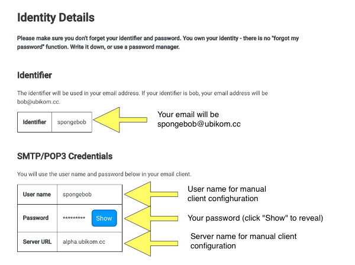

iOS Client Setup
Check Your Identity Details
This is the information presented on your identity details page:

Important things to notice are:
- The identifier. Your email address will be your identifier plus "@ubikom.cc".
I.e. if your identifier is "spongebob", your email address will be "spongebob@ubikom.cc".
-
You password. You chose it, you should know what it is. If you don't, click "Show" button
to reveal it.
That's all you need if you use a client supporting automatic configuration (see below). You can also
use pretty much any client, even if they can't configure your email automatically. In this case, you
will also need the following:
- Your user name. It's normally the same as your identifier.
-
Server URL. This is the URL you will use for SMTP and IMAP servers.
We recommend Blue Mail because it's a great email client, it works on any platform (mobile and
desktop), and it configures automatically using your email and password. Download Blue Mail for
iOS here.
iOS Mail
iOS mail is the default iOS email program. If you have an iPhone/iPad,
chances are, you have it installed.
Add an account
Notice that setup is done in iOS settings (not Mail app).
- Open Settings.
- Scroll down until you see Mail, tap on it.
- Tap on Accounts.
- Tap "Add Account".
- Tap "Other" (last item on the list).
- Tap "Add Mail Account".
Set Up New Account
- In "Name" field, enter your name, as you want the recipients to see it,
for example, "Spongebob Squarepants".
-
In "Email" field, enter your email. If your identifier on the
identity details page is "bob", your email would be "bob@ubikom.cc".
-
In "Password" field, enter the password you chose when you registered
your identity.
-
In "Description" field, enter any description for this account, for
example, "Ubikom Mail".
Tap "Next".
Set Up New Account - Details
Now you will see the new account details screen. Make sure that you
select "IMAP" (not "POP") on top.
For "INCOMING MAIL SERVER":
-
In "Host Name" field, enter the server URL from the identity details page,
i.e. "alpha.ubikom.cc"
-
In "User Name" field, enter the user name from the identity details page.
-
In "Password" field, enter the password from the identity details page.
This field might be auto-populated, if so, it already has the password
from the previous step.
For "OUTGOING MAIL SERVER":
-
In "Host Name" field, enter the server URL from the identity details page,
i.e. "alpha.ubikom.cc"
-
In "User Name" field, enter the user name from the identity details page.
-
In "Password" field, enter the password from the identity details page.
Tap "Next". Your settings will be verified - it may take a minute. Be patient.
Finishing Up
On the next screen, make sure "Mail" is enabled. Tap "Next", and your are done.
Now you can close the Settings app, and open Mail. Choose Ubikom account, and you
are good to go.
Problems?
If your setup doesn't work, double-check your settings. You might want to
delete this account completely and try to set it up again.
Check the list of known issues
here. If you think
you have found a bug, submit a new issue, or
email lgx@ubikom.cc.